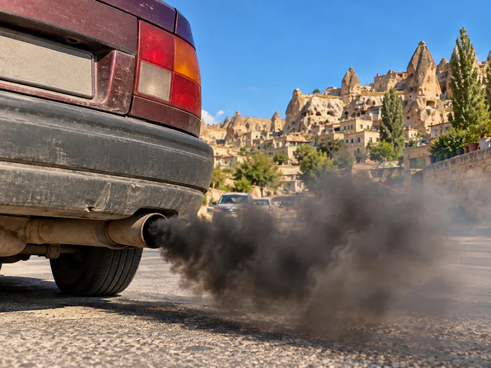

Trafik ve ÇevreKonu 17 / 1733 çıkmış soru
Trafik ve çevre
Çevre, çevre kirliliği, atık ve gürültü kavramlarını; trafiğin hava, toprak, su ve gürültü kirliliğine etkisini, sürücülerin çevreyi korumak için yapabileceklerini ve bu konudaki yasal kuralları anlatır.

1Konu anlatımı
Akılda kalsın
- Canlılarla etkileşim içindeki doğal ve fiziksel ögelerden oluşan dış ortama çevre, kirliliği önlemeye yönelik çalışmalara çevre koruma denir.
- Bakımsız araç daha çok yakıt harcar ve egzozdan daha fazla kirletici gaz çıkarır; bu öncelikle hava kirliliğine yol açar.
- Araç bakımlarını zamanında yaptırmak, uygun vitesle sürmek ve aracı gereksiz yere çalışır hâlde tutmamak kirliliği azaltır.
- Egzoz susturucusu gürültüyü azaltır; sökülmesi veya değiştirilmesi gürültü kirliliğini artırır ve yasaktır.
- Çevreyi rahatsız edecek derecede duman ve gürültü çıkaran araca önce ihtar yapılır, kusur giderilmezse araç trafikten men edilir.
- Atık yağ, akü, lastik ve eski parçalar çevreye bırakılmaz; yetkili toplama noktalarına teslim edilir.
- Toplu taşıma kullanmak, kısa mesafeleri yürümek ve uygun güzergâh seçmek trafik yoğunluğunu ve emisyonu azaltır.
Temel kavramlar
- Çevre: Canlıların yaşamını sürdürdüğü ve etkileşim içinde bulunduğu hava, su, toprak gibi doğal ve fiziksel ögelerden oluşan dış ortamdır.
- Çevre kirliliği: Çevrenin canlılara zarar verecek ölçüde bozulmasıdır.
- Çevre koruma: Çevre kirliliğini önlemek, doğal kaynakları ve ekolojik dengeyi korumak amacıyla yapılan çalışmaların tümüdür.
- Atık: Kullanıldıktan sonra atılan ve boşaltıldığı ortamda çevre kirliliğine yol açan maddelerdir.
- Gürültü: Kişilerin huzurunu, ruh ve beden sağlığını bozacak seviyedeki istenmeyen seslerdir.
Trafiğin çevreye etkileri
Kara yolunda hareket eden her araç çıkardığı egzoz gazı, gürültü ve olası yağ-yakıt sızıntılarıyla çevreyi kirletici bir etkendir.
| Kirlilik türü | Trafikteki kaynağı |
|---|---|
| Hava kirliliği | Egzoz gazları (karbonmonoksit, is, yanmamış yakıt vb.); bakımsız ve hasarlı egzozlu araçlar, uzun süre rölantide bekleme, yavaş akan yoğun trafik |
| Gürültü kirliliği | Gereksiz korna, susturucusu sökülmüş veya değiştirilmiş egzoz, araçtan dışarı taşan yüksek sesli müzik |
| Toprak ve su kirliliği | Bakımsız araçlardan sızan yağ, yakıt ve soğutma suyu; gelişigüzel bırakılan atık yağ, akü ve lastikler; tehlikeli maddelerin kurallara aykırı taşınması sonucu sızıntılar |
| Görüntü kirliliği ve çöp | Yola atılan çöp, sigara izmariti ve eski parçalar |
Atıklar kötü koku ve çirkin görüntü oluşturur, hastalık taşıyan zararlıların üremesine yol açar; yola atılan izmaritler yangın da çıkarabilir. Atıkların toplanıp işlenerek yeniden kullanılır hâle getirilmesi (geri dönüşüm) ise bir zarar değil, çevreyi koruyan bir uygulamadır.
Araç bakımı ve çevre
Bakımı zamanında ve eksiksiz yapılan araçta motor verimli çalışır, daha az yakıt harcar, egzozdan daha az zararlı gaz çıkar ve yağ-yakıt sızıntısı olmaz. Bakımsız araçta ise yanma bozulur, yakıt tüketimi artar ve egzozdan çıkan fazla kirletici gaz doğrudan havaya karışarak öncelikle hava kirliliğine neden olur. Bu nedenle araç bakımını önemseyen sürücü çevre kirliliğinin azalmasına katkı sağlar. Egzoz emisyon kontrollerinin zamanında yaptırılması da aynı amaca hizmet eder.
Egzoz susturucusu ve gürültü
Egzoz susturucusu, motordan çıkan basınçlı yanmış gazların oluşturduğu sesi azaltır. Egzoz borusu ve susturucunun orijinal hâliyle korunması gürültü kirliliğini önler; susturucu çıkarılırsa ya da değiştirilirse gürültü kirliliği artar. Araçta mevzuata aykırı değişiklik yapmak yasaktır; çevreyi rahatsız edecek derecede gürültü çıkaran değişikliklerde sürücüye ayrıca ceza uygulanır ve araç trafikten men edilir.
Çevreyi rahatsız edecek derecede duman veya gürültü çıkaran araçların sürücülerine ceza verilir ve aracın uygun hâle getirilmesi ihtar edilir; verilen sürede kusur giderilmezse araç trafikten men edilir. Araçtaki ses cihazlarını sesi dışarı taşacak ve kamunun huzurunu bozacak şekilde kullanmak, şehir içinde havalı korna kullanmak ve gereksiz yere korna çalmak da yasaktır.
Sürücülerin çevreye duyarlı davranışları
- Araç bakımlarını ve egzoz emisyon kontrollerini zamanında yaptırmak,
- Uygun vitesle ve dengeli hızla sürmek; ani hızlanma ve frenlerden kaçınmak,
- Aracı gereksiz yere çalışır hâlde (rölantide) tutmamak,
- Aracı aşırı yüklememek,
- Kaliteli ve kurşunsuz yakıt kullanmak,
- En kısa ve uygun güzergâhı seçmek, yoğun saatlerden kaçınmak; kısa mesafeleri yürümek,
- Mümkün olduğunca toplu taşıma kullanmak,
- Bakım sırasında çıkan atık yağ, akü, lastik ve eski parçaları çevreye bırakmayıp yetkili toplama noktalarına teslim etmek,
- Yola sigara izmariti ve çöp atmamak,
- Tehlikeli maddeleri kurallara uygun taşımak.
Özel araçların gereksiz kullanımı trafik yoğunluğunu, yakıt tüketimini, hava ve gürültü kirliliğini artırır; bu nedenle özel araç kullanımının teşvik edilmesi bir kirlilik önleme çalışması değildir. Şehirdeki yolları ve önemli yerleri iyi bilen ticari araç şoförü gereksiz dolaşmaz; böylece yakıt tüketimini ve emisyonu azaltır.
2Bu konunun soruları
MEB sınavlarında bu konudan çıkmış 33 soru. Her soruda doğru cevabı ve açıklamasını hemen görürsünüz.
Hangi sorular?
Sıralama